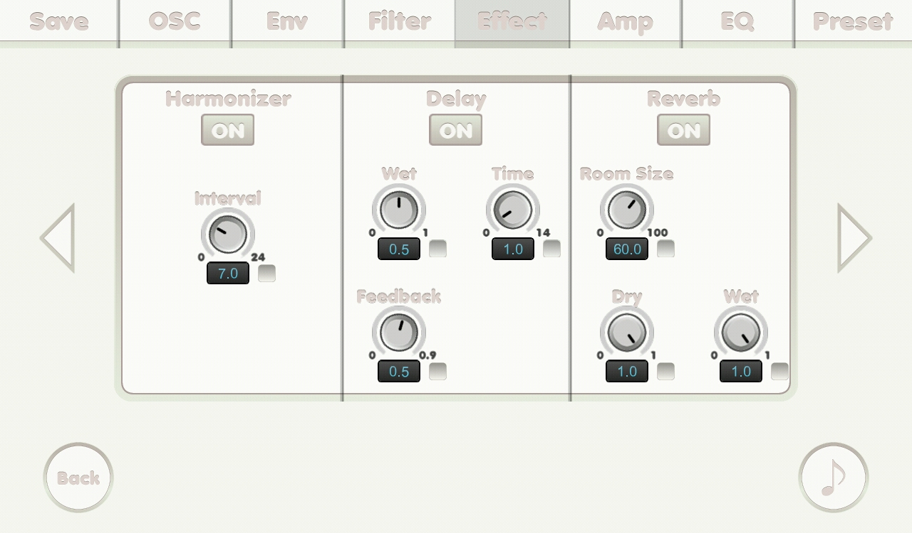

{% include JB/setup %}
Effect screen(2)

- ON button: to turn the effect on.
- Interval knob: interval.
- Wet knob: 0 is 100% DRY and 1 is 100% WET.
- Time knob: delay time in second.
- Feedback knob: feedback.
- Room size knob: room size.
- Dry knob: dry level.
- Wet knob: wet level.
- Check boxes: if it was checked its related number is affected by mutate feature.
- Swipe horizontally to go to other pages.